Far Cry 4 chegou em 2014 para a geração passada e a atual – aqui, consideramos as notas da geração atual. O jogo não tinha tarefa fácil – o seu antecessor, Far Cry 3, foi extremamente aclamado pela crítica. O jogo tem uma jogabilidade bem positiva - muitas coisas diferentes para se fazer, animais com uma ótima IA, uma boa economia e coleta de recursos e o arpéu, que permite explorar o cenário de Kyrat de um jeito mais vertical. O jogo também mistura muito bem as armas, veículos e animais criando um caos divertido e coerente. O que jogou a média do jogo para baixo foi a história, que é fraca, não empolga e tem personagens pouco carismáticos e nada memoráveis.
 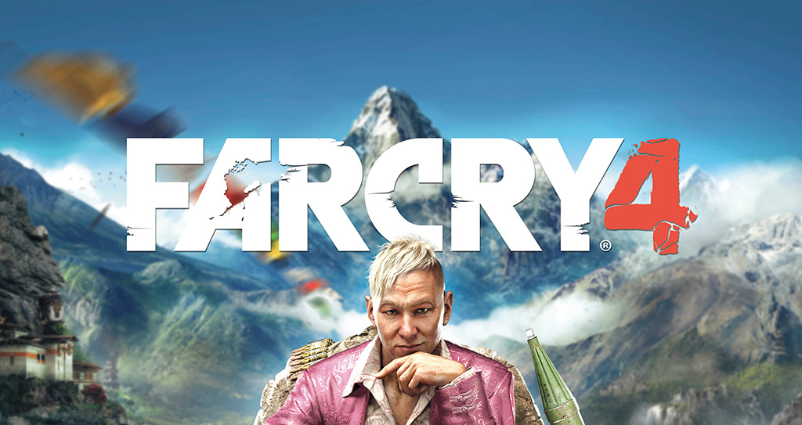
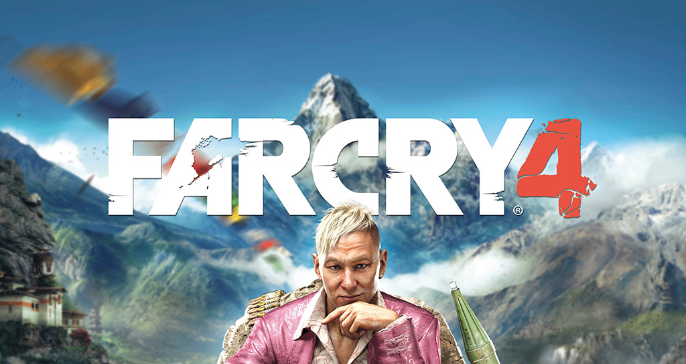

O primeiro Far Cry para os consoles foi o Far Cry Instincts, lançado no Xbox. Em teoria ele é um port do jogo original, de PC, mas na prática ele é bem mais que isso. A história foi levemente alterada, e o personagem principal Jack Carver ganhou habilidade especiais depois de ter sido injetado com o mesmo sérum que criava os monstros da ilha, o que deixou a jogabilidade diferente dos outros shooters disponíveis na época. Além disso, a habilidade de stealth foi aprimorada, dando mais possibilidade para os jogadores. Infelizmente, por limitações do hardware, o jogo perdeu a característica de “vá aonde quiser e faça o que quiser” e passou a ser um pouco mais linear. O visual impressionou na época, mesmo com alguns problemas. A principal crítica ao jogo e o que ajudou a jogar a nota dele um pouco para baixo foi a IA, que muitos acharam burra demais.
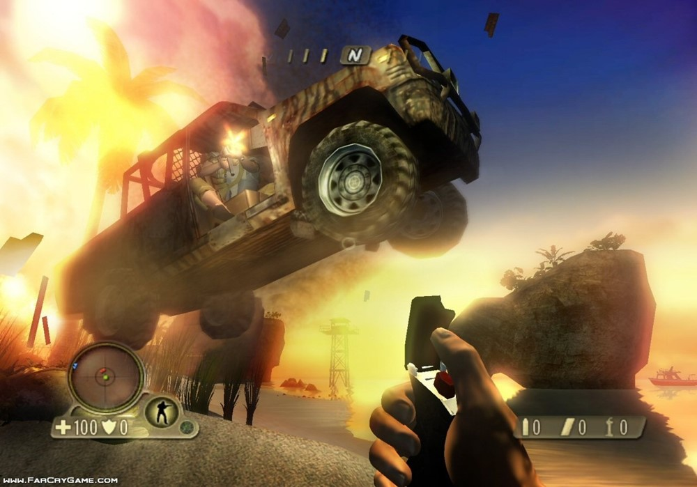 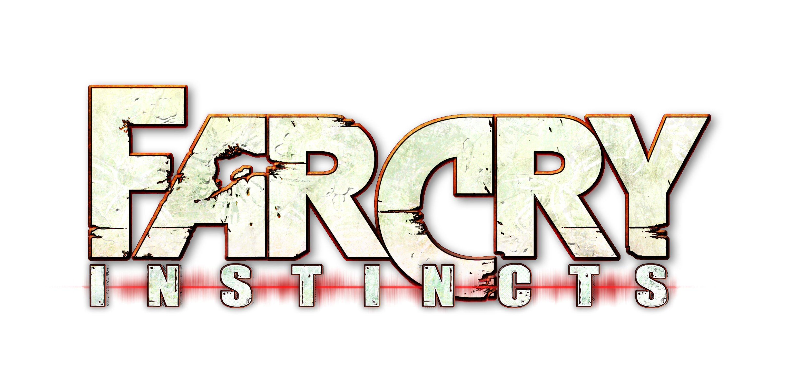 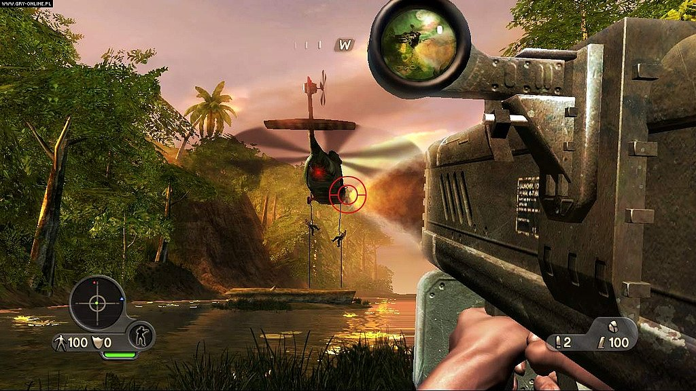Com a mesma nota, temos Far Cry 2. Por esse aqui ser um jogo totalmente novo e que saiu para três plataformas, e consequentemente atingiu mais gente, é justo colocar ele uma posição mais alta que o Instincts. Esse jogo começou frustrando muita gente por não ser uma continuação direta do primeiro título – não era o mesmo protagonista, mesmo ambiente, nada. Só o mesmo nome. Hoje a gente sabe que essa é a ideia da série, mas imagina você, fã do primeiro Far Cry, indo correndo jogar a continuação para descobrir que não é exatamente uma continuação. Dá para entender a decepção, mas, no final, o jogo superou os seus defeitos e a frustração dos jogadores, e na média geral é o terceiro com a melhor média da franquia.
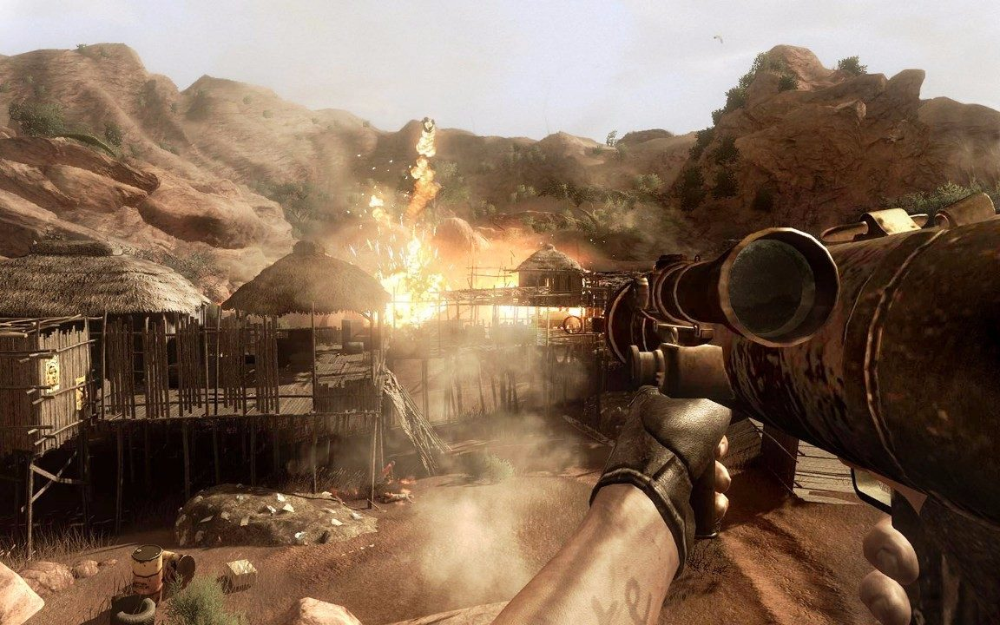 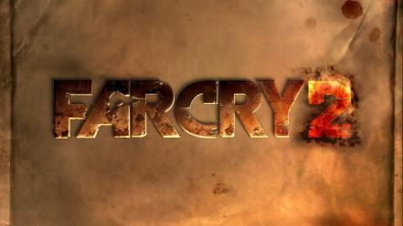 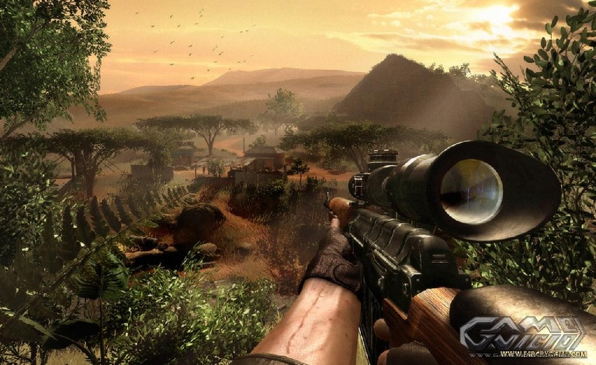O primeiro Far Cry foi uma produção da Crytek para o PC. Na época o jogo surpreendeu muito e foi considerado um dos melhores shooters da geração, o melhor desde Half Life. Os gráficos impressionaram – o ambiente da ilha era verossímil, detalhado e com personagens bem animados. A jogabilidade também foi elogiada, com uma IA mais inteligente que o esperado, ação bem dosada e mundo aberto que deixava o jogador montar sua própria estratégia. Tudo isso em uma campanha de 20h, longa para a época.
 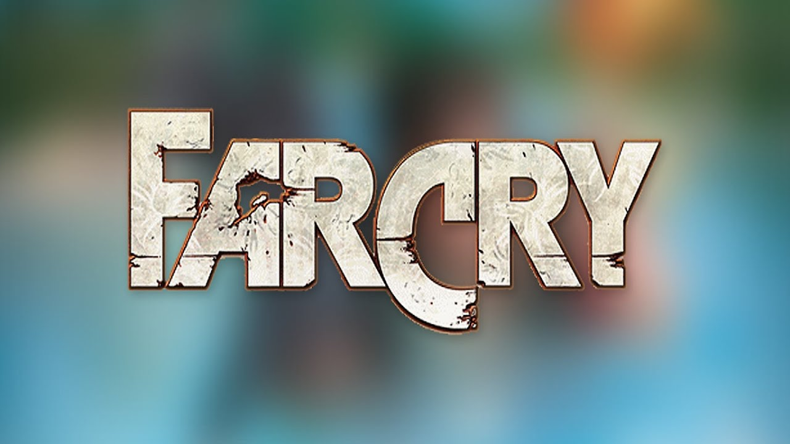
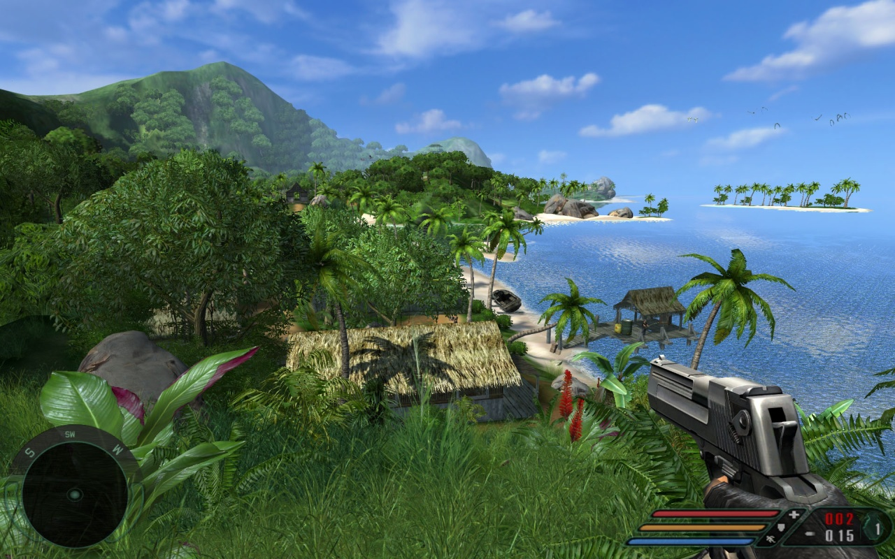
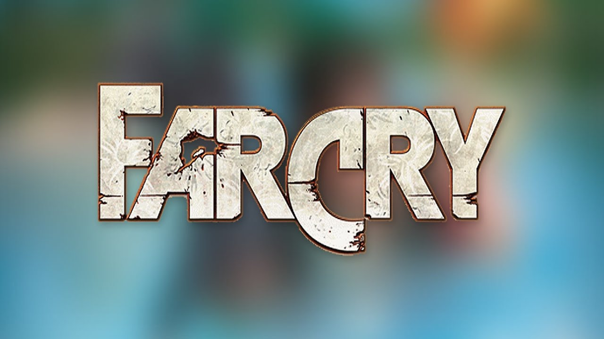
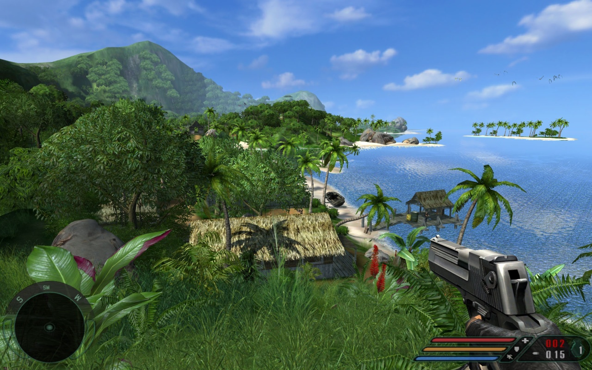
O primeiro lugar não poderia ser outro - Far Cry 3 - também conhecido como “aquele Far Cry que tem o Vaas”. O jogo tem um ambiente enorme e paradisíaco, com muita coisa para fazer e formas muito variadas de explorar o ambiente. A progressão do personagem também foi destaque, com uma boa árvore de habilidades. A história e os personagens foram muito elogiadas - principalmente o vilão louco Vaas, que é sem dúvidas o mais amado de toda a franquia. A captação facial é boa, que destaca a atuação e a dublagem sólida do game. A nota dele só não foi maior pelo modo multiplayer, com bugs técnicos que atrapalham a experiência. O sucesso foi grande o que garantiu pra Far Cry 3 alguns prêmios de jogos do ano – da revista Electronic Gaming Monthly e escolha do público da GameSpot.

 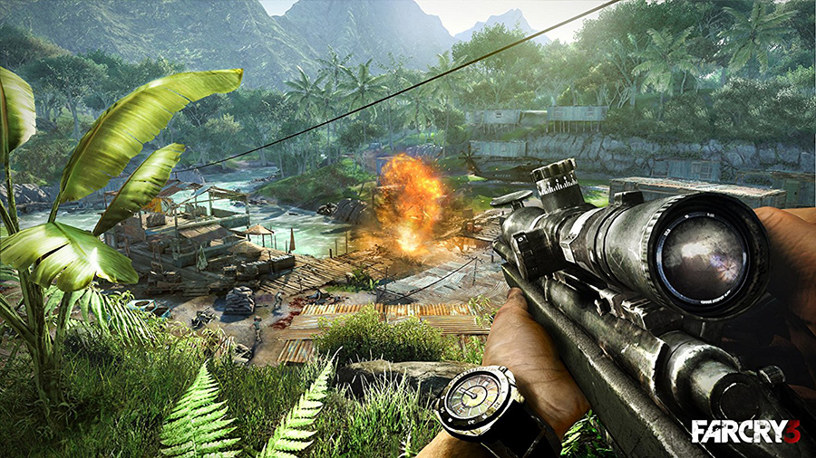
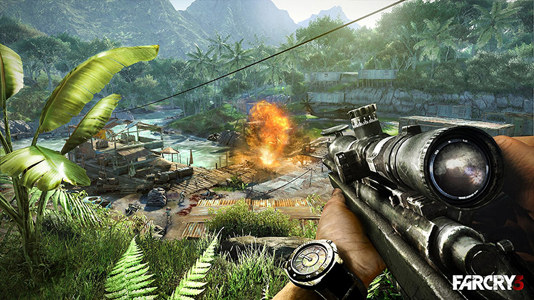